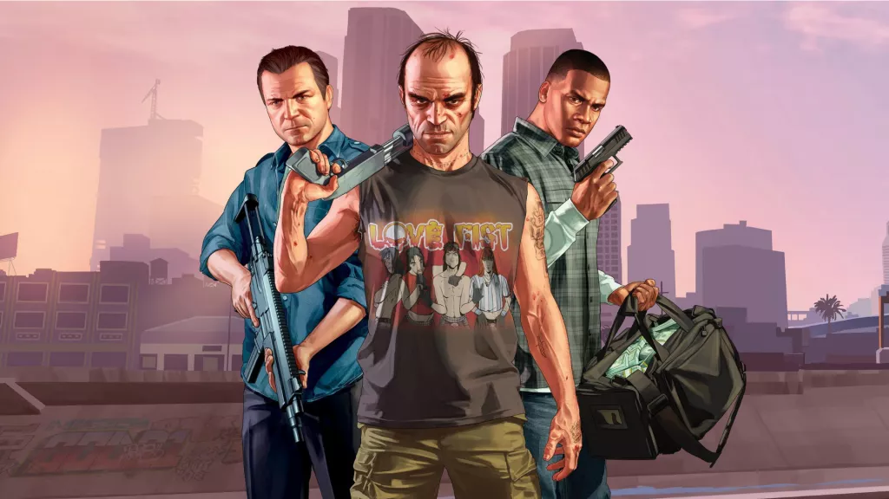

WELCOME TO LOS-SANTOS
When a young street hustler, a retired bank robber, and a terrifying psychopath find themselves entangled with some of the most frightening and deranged elements of the criminal underworld, the U.S. government, and the entertainment industry, they must pull off a series of dangerous heists to survive in a ruthless city in which they can trust nobody — least of all each other.
Current players can transfer both GTAV Story Mode progress and GTA Online characters and progression to PlayStation 5 and Xbox Series X|S with a one-time migration.